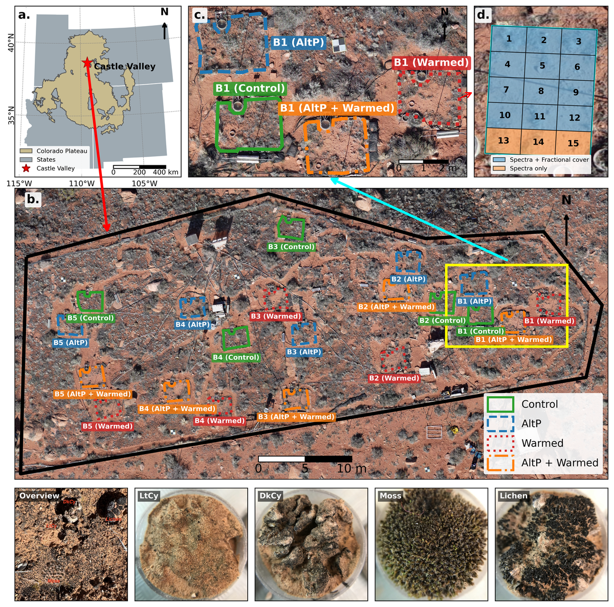
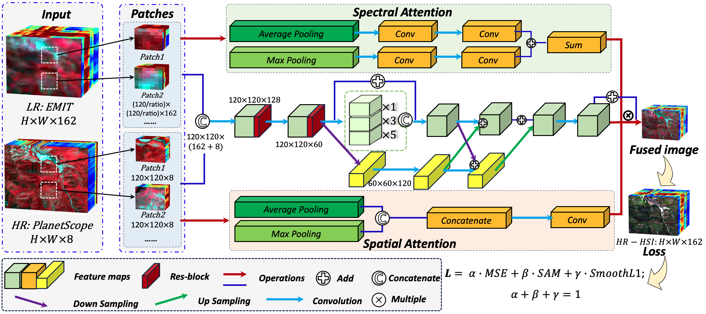
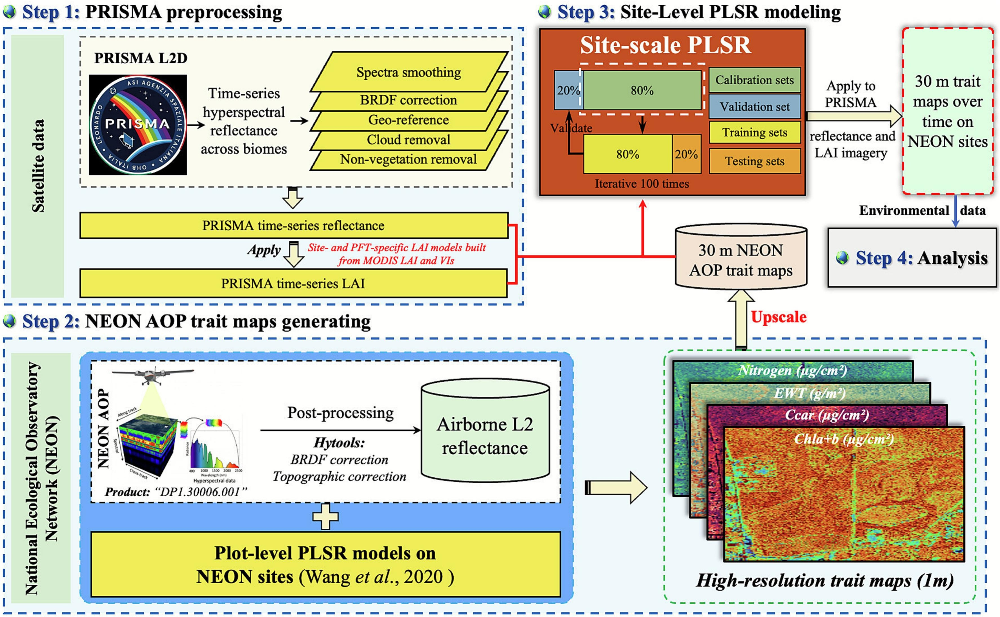
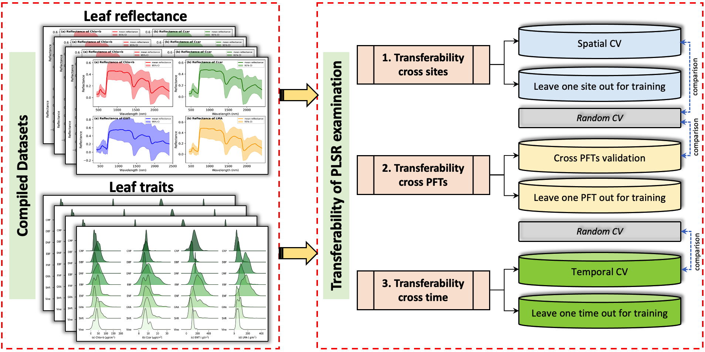
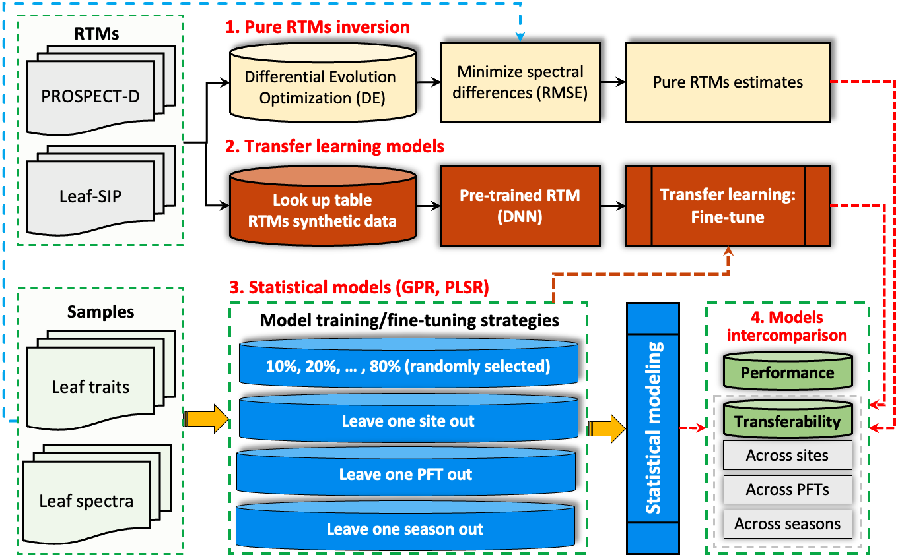
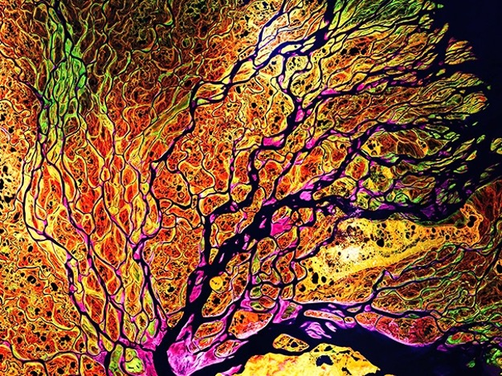
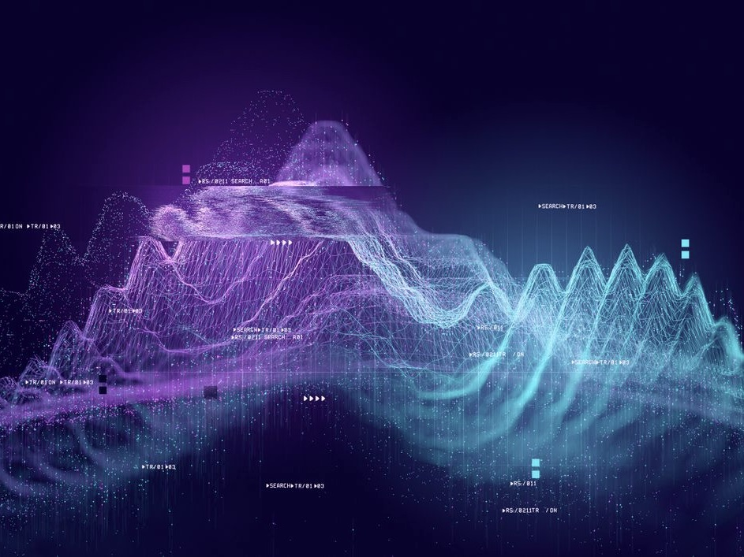
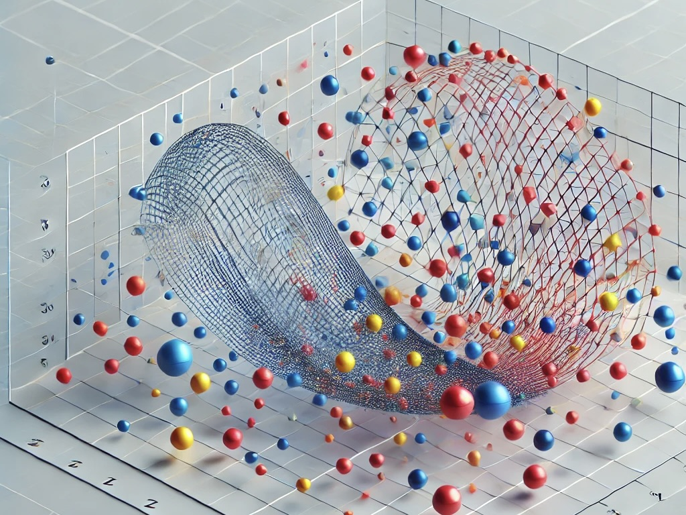
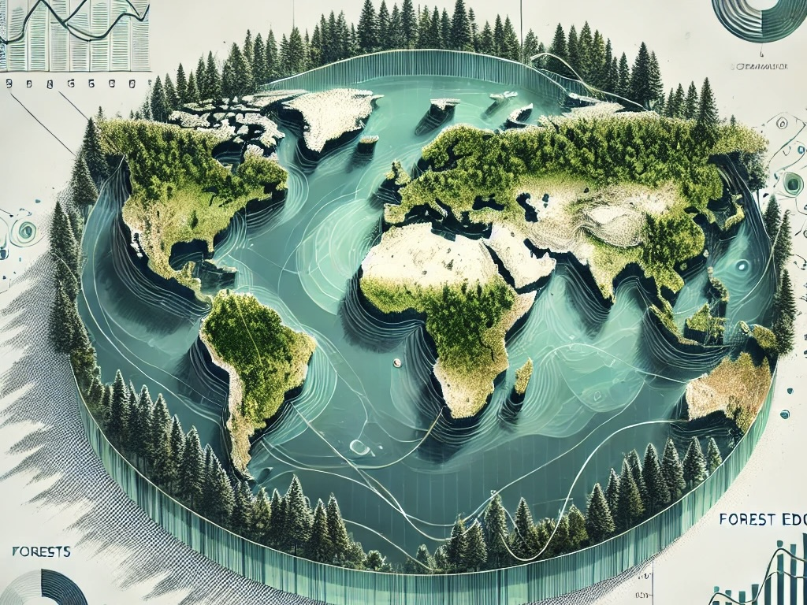

Tutorials
Practical guides and research workflows for geospatial analysis, imaging spectroscopy, and scientific computing.
Featured package · Python
hyperproc
Search, read, and process airborne and satellite hyperspectral data through a shared Python interface.
Explore tutorials & workflows
11 guides · All topics
-

Research workflow
Biocrust fractional-cover estimation
Estimate biocrust fractional cover with spectral mixtures, Random Forests, and a fine-tuned 1D-CNN.
- Python
- PyTorch
- Random Forest
-

Research workflow
SmallSat hyperspectral reconstruction
Pair EMIT and PlanetScope imagery, then train and evaluate a spatial–spectral fusion network.
- PyTorch
- EMIT
- PlanetScope
-

Research workflow
Seasonal trait mapping with PRISMA
Preprocess PRISMA imagery, train trait models with NEON AOP data, and analyze seasonal patterns.
- Python + R
- PRISMA
- PLSR
-

Research workflow
PLSR model transferability
Evaluate leaf-trait models across sites, plant functional types, and seasons using multiple validation schemes.
- Python
- scikit-learn
- PLSR
-

Research workflow
Transfer learning for leaf traits
Pretrain neural networks on radiative-transfer simulations, fine-tune with observations, and test transferability.
- PyTorch
- PROSPECT-D
- Leaf-SIP
-

Geospatial Analysis
Read & write GeoTIFF
Read raster data and export GeoTIFF files while preserving spatial metadata.
- Python
- GDAL
- NumPy
-

Data Visualization
Python for data visualization
Arrange subplot layouts, customize axes and ticks, and build clear figure legends.
- Python
- Matplotlib
-

Data Visualization
Scatter & line plots
Create scientific figures with scatter plots, density shading, and line plots.
- Python
- Matplotlib
- Seaborn
-

Geospatial Analysis
Global forest-edge mapping
Visualize forest-edge distributions, temporal dynamics, and landscape patterns.
- Python
- GDAL
- Cartopy
-
Research Computing
Command line basics & HPC
Navigate remote systems, transfer files, and submit Python jobs on HPC and HTC.
- Shell
- Slurm
- HTCondor
-
Research Computing
Git & GitHub
Set up a repository, track code changes, and manage large files with Git LFS.
- Git
- GitHub
- Git LFS